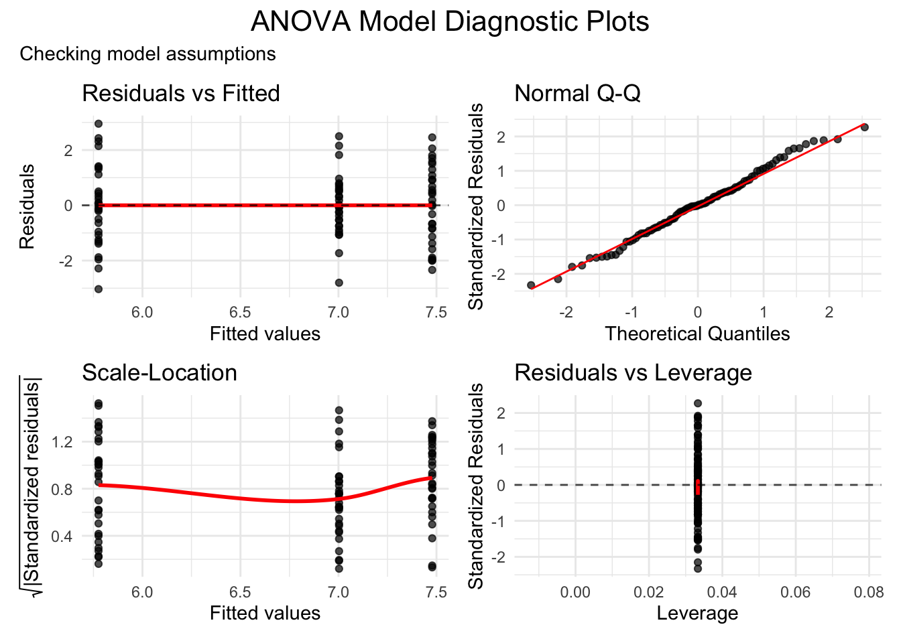

In this lab we will learn how to analyze data obtained from experiments. We will complement the lecture by also introducing some additiona, practically relevant concepts.
More precisely, we focus on the following aspects:
Import and explore datasets as typically produced by experiments
Conduct t-tests for simple experimental comparisons
Perform ANOVA for multi-group comparisons
Analyze factorial experimental designs
Calculate and interpret effect sizes
Create professional visualizations of experimental results
Understand how ANOVA is a special case of linear regression
Throuout the tutorial we will use the following packages:
library(dplyr) # Data manipulation
Attaching package: 'dplyr'
The following objects are masked from 'package:stats':
filter, lag
The following objects are masked from 'package:base':
intersect, setdiff, setequal, union
library(ggplot2) # Data visualizationlibrary(ggdist) # More visualization optionslibrary(readr) # Simple data importlibrary(broom) # Extract model datalibrary(effectsize) # Effect size calculationslibrary(car) # Advanced ANOVA functions
Loading required package: carData
Attaching package: 'car'
The following object is masked from 'package:dplyr':
recode
library(emmeans) # Post-hoc comparisons
Welcome to emmeans.
Caution: You lose important information if you filter this package's results.
See '? untidy'
library(knitr) # For nice tableslibrary(kableExtra) # For enhanced table formatting
Attaching package: 'kableExtra'
The following object is masked from 'package:dplyr':
group_rows
library(patchwork) # For aligning multiple plotslibrary(pwr) # For power analysis and sample size planning
We will use the following data sets, which are available for download from the lab webpage.
Rows: 60 Columns: 3
── Column specification ────────────────────────────────────────────────────────
Delimiter: ","
chr (1): group
dbl (2): participant_id, team_performance
ℹ Use `spec()` to retrieve the full column specification for this data.
ℹ Specify the column types or set `show_col_types = FALSE` to quiet this message.
Rows: 30 Columns: 5
── Column specification ────────────────────────────────────────────────────────
Delimiter: ","
chr (1): group
dbl (4): participant_id, team_performance, pre_performance, post_performance
ℹ Use `spec()` to retrieve the full column specification for this data.
ℹ Specify the column types or set `show_col_types = FALSE` to quiet this message.
Rows: 90 Columns: 4
── Column specification ────────────────────────────────────────────────────────
Delimiter: ","
chr (1): communication_method
dbl (3): participant_id, satisfaction_score, task_completion_time
ℹ Use `spec()` to retrieve the full column specification for this data.
ℹ Specify the column types or set `show_col_types = FALSE` to quiet this message.
factorial_study <-read_csv("factorial_study.csv")
Rows: 120 Columns: 4
── Column specification ────────────────────────────────────────────────────────
Delimiter: ","
chr (2): feedback_type, experience_level
dbl (2): participant_id, performance_improvement
ℹ Use `spec()` to retrieve the full column specification for this data.
ℹ Specify the column types or set `show_col_types = FALSE` to quiet this message.
Data Exploration
As usual, it is a good idea to start with looking at the data sets, such that you know what the data looks like:1
Dataset 1: Classic randomized controlled trial (RCT) with treatment and control groups
Dataset 2: One-way experimental design with three conditions (between-subjects)
Dataset 3: 2×2 factorial design allowing us to test main effects and interactions
Connection to lecture: These represent the three main experimental designs we discussed - simple, multi-group, and factorial :::
Part 2: Simple Experiments - t-tests
Assume we are asking the following research question:
Does leadership training improve team performance?
One way to tackle this question is to compare a treatment group, which has received a leadership training, to a control group, which has not received such training. If the groups are otherwise similar, then this setting should help us to identify the causal effect of the leadership training.2
Descriptive statistics
For this task, we will use the first data set. Let us first compute the standard statistics:
As usual, it is also strongly recommended to complement the quantitative info with a visualization. Data such as those is often presented using boxplots:
ggplot(leadership_study_between, aes(x = group, y = team_performance, fill = group)) +geom_boxplot(alpha =0.7) +geom_jitter(width =0.2, alpha =0.5) +stat_summary(fun = mean, geom ="point", shape =23, size =3, fill ="red") +labs(title ="Team Performance by Group",x ="Group",y ="Team Performance Score",caption ="Red diamonds show group means") +theme_minimal() +theme(legend.position ="none")
But boxplots might shallow important distributional info, so you should use them carefully or complement them with other tools. Below is an alternative that provides more information on the distribution of the data. For more on this issue see Holtz (2025).
In the following we want to compare the means across independent groups. To this end, we may use a t-test.
But such statistical tests make specific assumptions about the data. If these assumptions are violated, the results may be unreliable or incorrect. Therefore, it is important to check the adequacy of the data first.
And no worries if the assumptions for one test are violated - usually there are alternatives available.
In the present case, we want to use a simple t-test. This test makes two assumptions:
The two groups each are normally distributed.
The variances of both groups are the same.
To test the first assumption, we can use the Shapiro-Wilk Test for Normality. Here we test the following hypotheses:
\(H_0\): The data is normally distributed
\(H_1\): The data is not normally distributed
Thus, we we get \(p > 0.05\), we cannot reject \(H_0\). But for smaller \(p\)-values, we should reject \(H_0\) and need to look for alternative tests.
Shapiro-Wilk normality test
data: pull(filter(leadership_study_between, group == "training"), team_performance)
W = 0.98662, p-value = 0.9614
Good! We cannot reject the hypothesis of normally distributed data!
The next step is to test, whether both groups have the same variance. Levene’s test can be used to do exactly this. It tests:
\(H_0\): The variances are equal across groups
H_1: The variances are not equal across groups
If \(p > 0.05\), we do not reject \(H_0\) and we can use a simple t-test. If we have to reject \(H_0\), however, it would be better to use the more robust Welch test.
car::leveneTest(team_performance ~ group, data = leadership_study_between)
Warning in leveneTest.default(y = y, group = group, ...): group coerced to
factor.
Levene's Test for Homogeneity of Variance (center = median)
Df F value Pr(>F)
group 1 1.0763 0.3038
58
Independent t-test
Why we use t-tests: To compare means between two groups when we have continuous data and want to test if there’s a statistically significant difference.
t_test_result <-t.test( team_performance ~ group, data = leadership_study_between,var.equal =TRUE# Use FALSE if variances unequal ) t_test_result
Two Sample t-test
data: team_performance by group
t = -3.9344, df = 58, p-value = 0.0002256
alternative hypothesis: true difference in means between group control and group training is not equal to 0
95 percent confidence interval:
-13.962870 -4.545972
sample estimates:
mean in group control mean in group training
74.52896 83.78338
Effect Size Calculation
What are effect sizes? The previous result tells us that the difference in means between the groups appeaers to be about -9.25. But is this a lot? Effect sizes tell us about the practical significance of our findings - how big is the difference we found? Unlike \(p\)-values, effect sizes are not influenced by sample size and help us understand if our statistically significant result is also practically meaningful. Cohen’s d is often used: This standardized effect size tells us how many standard deviations apart the two group means are.
Small effect: d ≈ 0.2 (groups overlap about 85%)
Medium effect: d ≈ 0.5 (groups overlap about 67%)
Large effect: d ≈ 0.8 (groups overlap about 53%)
The implementation in R is trivial:
cohens_d <- effectsize::cohens_d(team_performance ~ group, data = leadership_study_between)print(cohens_d)
Cohen's d | 95% CI
--------------------------
-1.02 | [-1.55, -0.47]
- Estimated using pooled SD.
The key value here is Cohen’s of -1.02! (For the interpretation see the exercise below).
Paired t-test Example
Next, we might want to look at our research question from a slightly different angle. Rather than the between-subject design from above, we now take a within-subject view: to this end, we want to check whether the training had an effect on those people who were in the training (treatment) group by comparing their performance before and after the training.
To this end, we focus on the training group, and then use the function t.test() with the argument paired = TRUE. This makes sure we are using the version of the test for the within-subjects context:
Paired t-test
data: training_group$post_performance and training_group$pre_performance
t = 7.4774, df = 29, p-value = 3.059e-08
alternative hypothesis: true mean difference is not equal to 0
95 percent confidence interval:
10.55898 18.51001
sample estimates:
mean difference
14.53449
🎯 Exercise (5 minutes): Interpret the results. What can we conclude about the effectiveness of leadership training?
::: {.callout-tip title=“Possible answers”, collapse=“true”} - Statistical significance: If \(p < 0.05\), training significantly improved performance; since \(p\approx 0\), the training has a highly significant effect - Effect size interpretation: Cohen’s d is large, so we have a large effect. This suggests the effect of the training is also practically meaningful. - Confidence interval: If the CI doesn’t include 0, we’re confident there’s a real difference; even if we are very conservative, we would still expect a 10 point improvement of the training. - Business implication: Training appears effective and worth the investment :::
Part 3: Multi-Group Experiments - ANOVA (25 minutes)
Let us now turn to the following research question:
Which communication method (face-to-face, video call, email) leads to highest satisfaction?
Note that this time we not only compare one group to another as in the previous section, but we need to compare three groups with each other as we have three different communication methods. Therefore, we cannot use simple t-tests, but need to use an ANOVA.
ANOVA is more robust than t-tests but still requires certain conditions to be met for valid results. In fact, we are testing the same assumptions as in the t-test case:
Normality of Residuals: For ANOVA, we check if the residuals (not the raw data) are normally distributed.
Homogeneity of Variances: ANOVA assumes that the variance of the dependent variable is equal across all groups.
Let us start with testing the normality of the residuals. We again use the Shapiro test, which tests the following hypothesis:
\(H_0\): Residuals are normally distributed
\(H_1\): Residuals are not normally distributed
Thus, if \(p > 0.05\), the Null cannot be rejected and we can assume the residuals to follow a normal distribution. If \(p \leq 0.05\), however, the hypothesis of normally distributed residuals must be rejected and we need to consider transforming the data or using a non-parametric test.
aov_model <-aov(satisfaction_score ~ communication_method, data = communication_study)shapiro.test(residuals(aov_model))
Shapiro-Wilk normality test
data: residuals(aov_model)
W = 0.99149, p-value = 0.8342
Since \(p>0.05\) we are on the save side!
We then check the equality of variances and again use Levene’s test with the following hypotheses:
\(H_0\): Variances are equal across all groups
\(H_1\): Variances are not equal across groups
Thus, if \(p > 0.05\), the Null cannot be rejected and we can assume the variances to be equal. If \(p \leq 0.05\), however, the hypothesis of equal variances must be rejected and we need to consider transforming the data or using Welch’s ANOVA.
car::leveneTest(satisfaction_score ~ communication_method, data = communication_study)
Warning in leveneTest.default(y = y, group = group, ...): group coerced to
factor.
Levene's Test for Homogeneity of Variance (center = median)
Df F value Pr(>F)
group 2 1.8801 0.1587
87
Again, the Null cannot be rejected and we can continue with the ANOVA as planned.
Before we enter the actual analysis we can also create the common diagnostics plots:
Warning: The `augment()` method for objects of class `aov` is not maintained by the broom team, and is only supported through the `lm` tidier method. Please be cautious in interpreting and reporting broom output.
This warning is displayed once per session.
residuals_vs_fitted <- model_data %>%ggplot(aes(x = .fitted, y = .resid)) +geom_point(alpha =0.7) +geom_smooth(method ="loess", se =FALSE, color ="red") +geom_hline(yintercept =0, linetype ="dashed", alpha =0.7) +labs(title ="Residuals vs Fitted", x ="Fitted values", y ="Residuals") +theme_minimal()qq_plot <- model_data %>%ggplot(aes(sample = .std.resid)) +stat_qq(alpha =0.7) +stat_qq_line(color ="red") +labs(title ="Normal Q-Q", x ="Theoretical Quantiles", y ="Standardized Residuals") +theme_minimal()scale_location <- model_data %>%ggplot(aes(x = .fitted, y = sqrt_abs_resid)) +geom_point(alpha =0.7) +geom_smooth(method ="loess", se =FALSE, color ="red") +labs(title ="Scale-Location", x ="Fitted values", y =expression(sqrt("|Standardized residuals|"))) +theme_minimal()residuals_vs_leverage <- model_data %>%ggplot(aes(x = .hat, y = .std.resid)) +geom_point(alpha =0.7) +geom_smooth(method ="loess", se =FALSE, color ="red") +geom_hline(yintercept =0, linetype ="dashed", alpha =0.7) +labs(title ="Residuals vs Leverage", x ="Leverage", y ="Standardized Residuals") +theme_minimal()combined_patchwork <- (residuals_vs_fitted | qq_plot) / (scale_location | residuals_vs_leverage) +plot_annotation(title ="ANOVA Model Diagnostic Plots",subtitle ="Checking model assumptions",theme =theme(plot.title =element_text(size =16, hjust =0.5)) )combined_patchwork
`geom_smooth()` using formula = 'y ~ x'
Warning in simpleLoess(y, x, w, span, degree = degree, parametric = parametric,
: pseudoinverse used at 5.7673
Warning in simpleLoess(y, x, w, span, degree = degree, parametric = parametric,
: reciprocal condition number 7.744e-16
Warning in simpleLoess(y, x, w, span, degree = degree, parametric = parametric,
: There are other near singularities as well. 4.3333e-34

Residuals vs Fitted: Should show random scatter (no patterns)
Q-Q plot: Points should follow the diagonal line (normality)
Scale-Location: Should show random scatter (equal variances)
Residuals vs Leverage: Identifies influential outliers
One-Way ANOVA
Since we compare three groups we do not use t-tests but an ANOVA.
As you know, ANOVA is actually a special case of linear regression. Therefore, we can get the ANOVA results in two equivalent ways.
The first option is to use the classical aov() function:
anova_result <-aov(satisfaction_score ~ communication_method, data = communication_study)summary(anova_result)
Df Sum Sq Mean Sq F value Pr(>F)
communication_method 2 46.29 23.146 13.2 9.81e-06 ***
Residuals 87 152.50 1.753
---
Signif. codes: 0 '***' 0.001 '**' 0.01 '*' 0.05 '.' 0.1 ' ' 1
The second option is to use lm() as we know it from linear regression:
lm_model <-lm(satisfaction_score ~ communication_method, data = communication_study)anova(lm_model)
Analysis of Variance Table
Response: satisfaction_score
Df Sum Sq Mean Sq F value Pr(>F)
communication_method 2 46.292 23.1460 13.205 9.813e-06 ***
Residuals 87 152.497 1.7528
---
Signif. codes: 0 '***' 0.001 '**' 0.01 '*' 0.05 '.' 0.1 ' ' 1
The overall \(p\)-value is extremely small, so the Null hypothesis of no difference between the groups should definitely be rejected
In other words: Communication method significantly affects satisfaction scores
This means that at least one communication method produces significantly different satisfaction scores than the others
But the result does not tell us which specific methods differ from each other (need post-hoc tests)
The result also does not contain information about the direction of differences (which method is best/worst) or the effect size
Detour: categorical variables in Regression
When you add a categorial variable as a predictor to your regression, R automatically creates dummy variables for categorical predictors. The first level alphabetically becomes the reference group:
summary(lm_model)$coefficients |>kable(digits =3)
Estimate
Std. Error
t value
Pr(>|t|)
(Intercept)
5.776
0.242
23.895
0.000
communication_methodface_to_face
1.702
0.342
4.980
0.000
communication_methodvideo_call
1.227
0.342
3.590
0.001
Since ‘email’ comes first alphabetically, it is the reference group.
Intercept = mean of reference group (email, comes first alphabetically)
communication_methodface_to_face = difference between face_to_face and email
communication_methodvideo_call = difference between video_call and email
As shown above, both approaches give identical results. Still, they offer different perspectives:
Use aov() when: - You want traditional ANOVA output - Focus is on group comparisons - Need post-hoc tests such as TukeyHSD(), which take the aov-model as an input
Use lm() when: - You want to see specific contrasts - Planning to add continuous covariates later - Want regression-style interpretation - Building toward more complex models
Example: From ANOVA to ANCOVA
If we add a continuous variable to an ANOVA, we get an ANCOVA:
ancova_model <-lm(satisfaction_score ~ communication_method + task_completion_time, data = communication_study)summary(ancova_model)
Call:
lm(formula = satisfaction_score ~ communication_method + task_completion_time,
data = communication_study)
Residuals:
Min 1Q Median 3Q Max
-3.07895 -0.87806 -0.00768 0.78530 2.90678
Coefficients:
Estimate Std. Error t value Pr(>|t|)
(Intercept) 5.628267 0.807830 6.967 6.15e-10 ***
communication_methodface_to_face 1.737394 0.389664 4.459 2.48e-05 ***
communication_methodvideo_call 1.253306 0.369901 3.388 0.00106 **
task_completion_time 0.004472 0.023342 0.192 0.84853
---
Signif. codes: 0 '***' 0.001 '**' 0.01 '*' 0.05 '.' 0.1 ' ' 1
Residual standard error: 1.331 on 86 degrees of freedom
Multiple R-squared: 0.2332, Adjusted R-squared: 0.2064
F-statistic: 8.718 on 3 and 86 DF, p-value: 4.108e-05
In the example, we now control for individual differences in task completion time. While trivial in the lm()-context, this would be much harder to do with the aov() approach!
Effect Size for ANOVA
\(\eta^2\) tells us what proportion of the total variance in the dependent variable is explained by the independent variable and, as explained above, serves as a standardized measure for comparing effect sizes:
Remember that:
Small effect: η² ≈ 0.01 (1% of variance)
Medium effect: η² ≈ 0.06 (6% of variance)
Large effect: η² ≈ 0.14 (14% of variance)
Example: η² = 0.23 means communication method explains 23% of satisfaction variance
For one-way between subjects designs, partial eta squared is equivalent
to eta squared. Returning eta squared.
print(eta_squared)
# Effect Size for ANOVA
Parameter | Eta2 | 95% CI
------------------------------------------
communication_method | 0.23 | [0.11, 1.00]
- One-sided CIs: upper bound fixed at [1.00].
Post-Hoc Comparisons
The ANOVA tells us there’s a difference somewhere among the groups, but not which specific groups differ. This is why we need post-hoc tests: they provide these pairwise comparisons while controlling for multiple testing.
The multiple testing problem
If we do multiple t-tests (e.g. one for each pairwise comparison), our Type I error rate will inflate. Post-hoc tests adjust critical values to maintain overall \(\alpha = 0.05\).
The most common post-hoc test has a nice name: Tukey’s Honestly Significant Difference (HSD). It takes the fitted ANOVA model as its input:
But there are no significant differences between video calls and face-to-face (\(p = 0.35\))
Thus, both face-to-face and video call communication methods produce significantly higher satisfaction scores than email, but face-to-face and video call don’t differ significantly from each other.
Part 4: Factorial Designs (20 minutes)
For this last part we consider the following research question:
How do feedback type and experience level interact to affect performance improvement?
This already gives us a good visual impression of the results, but we also want to analyze the results quantitatively.
Two-Way ANOVA
The factorial design allows us to consider interaction effects among factors. But to detect such interaction, we must use a two-way ANOVA, not the traditional one!
To do this, we still use the same function aov() (or lm()), but add the additional factor to the formula:
Df Sum Sq Mean Sq F value Pr(>F)
feedback_type 1 13.4 13.430 1.237 0.268
experience_level 1 7.1 7.115 0.656 0.420
feedback_type:experience_level 1 7.9 7.877 0.726 0.396
Residuals 116 1259.1 10.854
And while the classical ANOVA was the same as simple linear regression with categorial variables, two-way ANOVA is the same as multiple regression with interaction effects:
lm_factorial <-lm(performance_improvement ~ feedback_type * experience_level, data = factorial_study)anova(lm_factorial)
Analysis of Variance Table
Response: performance_improvement
Df Sum Sq Mean Sq F value Pr(>F)
feedback_type 1 13.43 13.4301 1.2373 0.2683
experience_level 1 7.12 7.1155 0.6556 0.4198
feedback_type:experience_level 1 7.88 7.8766 0.7257 0.3960
Residuals 116 1259.07 10.8541
Dummy coding in the two-way context
With two factors, R creates dummy variables for each factor plus their interaction:
🎯 Intermediate exercise: 1. Interpret the main effects and interaction 2. What practical recommendations would you make based on these results? 3. How does this connect to the i-frame vs s-frame discussion from the lecture?
::: {.callout-tip title=“Possible answers”, collapse=} 2 1. Interpretation: - Main effect of feedback: If significant, one type of feedback is generally better - Main effect of experience: If significant, novices and experts respond differently overall - Interaction effect: If significant, optimal feedback depends on experience level - Visual cues: Parallel lines = no interaction; crossing lines = interaction present
2. Practical recommendations: - If interaction significant: Customize feedback approach based on experience level - For novices: Might need more positive, encouraging feedback - For experts: Might benefit from more critical, detailed feedback - Training programs: Should differentiate based on employee experience
3. i-frame vs s-frame connection: - i-frame approach: Train managers to give different feedback to different employees - s-frame approach: Change organizational culture and systems to support appropriate feedback - Individual focus: Coaching managers on feedback skills - Structural focus: Performance management systems that account for experience levels :::
Part 5: Power Analysis and Sample Size Planning
Statistical power is the probability of detecting an effect when it truly exists. You know from the lecture that the decision about sample sizes determines in part statistical power. Power analysis helps us plan adequate sample sizes and evaluate our study’s sensitivity.
General aspects of power analysis
Remember the components of power analysis:
Power: Probability of detecting effect (usually we want ≥ 0.8)
Effect size: How big a difference we want to detect
Sample size: Number of participants needed
Alpha level: Type I error rate (usually 0.05)
We can use power analysis in two different ways:
Post-hoc (observed): What was our power given the sample size we had?
A priori (prospective): How many participants do we need to detect an effect?
Regarding the first, we may ask: what was our power to detect the effect we found in the leadership study?
observed_power <-pwr.t.test(n =30, d =as.numeric(cohens_d$Cohens_d), sig.level =0.05)print(observed_power)
Two-sample t test power calculation
n = 30
d = 1.015848
sig.level = 0.05
power = 0.9718339
alternative = two.sided
NOTE: n is number in *each* group
Lets turn to the a priori power analysis, i.e. what you should do BEFORE collecting data to determine how many participants you need.
In a first step, you always need to specify your research parameters:
What effect size do you want to detect?
What power level do you want? (typically 0.8 or 0.9)
What alpha level will you use? (typically 0.05)
The remaining steps depend on the analysis method we wish to employ:
t-Tests
Assume we want to plan a new leadership training study, similar to the one above. We want to detect a medium effect (\(d = 0.5\)) with 80% power.
sample_size_medium <-pwr.t.test(d =0.5, power =0.8, sig.level =0.05)print(sample_size_medium)
Two-sample t test power calculation
n = 63.76561
d = 0.5
sig.level = 0.05
power = 0.8
alternative = two.sided
NOTE: n is number in *each* group
If instead we would like to identify a small effect (with \(d=0.5\)). Everything else remains the same:
sample_size_small <-pwr.t.test(d =0.2, power =0.8, sig.level =0.05)print(sample_size_small)
Two-sample t test power calculation
n = 393.4057
d = 0.2
sig.level = 0.05
power = 0.8
alternative = two.sided
NOTE: n is number in *each* group
And what would happen if we wanted higher power (90%) for a medium effect?
sample_size_high_power <-pwr.t.test(d =0.5, power =0.9, sig.level =0.05)print(sample_size_high_power)
Two-sample t test power calculation
n = 85.03128
d = 0.5
sig.level = 0.05
power = 0.9
alternative = two.sided
NOTE: n is number in *each* group
We see that small design choices can have huge effects:
Assume we are planning a communication study with 3 groups and we want to detect a medium effect (f = 0.25) with 80% power. Note that what was Cohen’s d for the t-test case, has now become Cohens f for the ANOVA case:
sample_size_anova <-pwr.anova.test(k =3, f =0.25, sig.level =0.05, power =0.8)print(sample_size_anova)
Balanced one-way analysis of variance power calculation
k = 3
n = 52.3966
f = 0.25
sig.level = 0.05
power = 0.8
NOTE: n is number in each group
Summary and Key Takeaways
Key take-aways
Data exploration is crucial before statistical testing
Assumption checking ensures valid results and guides method selection
Effect sizes provide practical significance context beyond p-values
Visualization aids interpretation and communication of results
ANOVA is just regression with categorical predictors
Both aov() and lm() give identical results but offer different perspectives
Post-hoc tests control for multiple comparisons when making pairwise comparisons
Factorial designs allow detection of interactions between factors
I use the function kable() for nicer output in the html file. When you replicate the code in R-Studio its best to skip the part |> kable().↩︎
At this point we assume that the groups were similar before the training. In practice, it would be good to first make sure the performances of the groups before the training were similar.↩︎